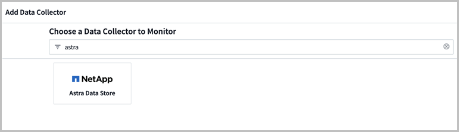

Cloud Insights를 통해 메트릭을 모니터링합니다
기여자
Cloud Insights를 사용하여 Astra 데이터 저장소 미리 보기 메트릭을 모니터링할 수 있습니다.
다음은 Cloud Insights에 표시되는 몇 가지 Astra 데이터 저장소 미리 보기 메트릭입니다.
을 사용하여 Astra Data Store 미리 보기에서 생성된 메트릭 목록을 표시할 수도 있습니다 [Open Metrics API help].
Cloud Insights 연결 필수 작업을 완료합니다
Astra 데이터 저장소를 Cloud Insights와 연결하기 전에 다음 사항을 수행해야 합니다.
-
"Astra Data Store Monitoring Operator를 설치합니다" 이것은 Astra Data Store 미리 보기 설치 지침의 일부입니다.
-
"kubbeck-astrads 바이너리를 설치합니다" 이것은 Astra Data Store 미리 보기 설치 지침의 일부입니다.
-
'awk, curl, grep', 'jq' 명령을 사용할 수 있는지 확인합니다
다음 정보를 수집합니다.
-
획득 장치, 데이터 수집, 데이터 수집 및 로그 수집 등의 범주에 대한 읽기/쓰기 권한이 있는 * Cloud Insights API 키 이 작업은 읽기/쓰기 작업, 획득 장치 설정 및 데이터 수집 프로세스 설정에 사용됩니다.
-
* Kubernetes API Server IP 주소 및 포트 *. Astra Data Store 미리보기 클러스터를 모니터링하는 데 사용됩니다.
-
* Kubernetes API 토큰 *. Kubernetes API를 호출하는 데 사용됩니다.
-
* 영구 볼륨 구성 *. 영구 볼륨의 프로비저닝 방법에 대한 정보입니다. 자세한 내용은 아래의 "획득 장치"를 참조하십시오.
설치 스크립트를 다운로드하고 실행합니다
Cloud Insights는 모니터링 오퍼레이터를 통해 Astra 데이터 저장소 미리 보기 모니터링을 활성화하는 Bash 스크립트를 제공합니다. 설치 스크립트는 Astra Data Store Collector, Telegraf Agent 및 Fluent Bit Agent와 함께 획득 장치를 설치합니다.
Cloud Insights 테넌트 도메인 이름과 선택한 API 액세스 키는 다운로드 시 설치 프로그램 스크립트에 포함됩니다.
그런 다음 다음과 같이 메트릭이 전송됩니다.
-
Telegraf는 Cloud Insights 데이터 레이크에 메트릭을 전송합니다.
-
Fluent bit는 로그 수집 서비스에 로그를 보냅니다.
-
Cloud Insights 계정이 없는 경우 계정을 만듭니다.
-
Cloud Insights에 로그인합니다.
-
Cloud Insights 메뉴에서 * Admin * > * Data Collector * 를 클릭합니다.
-
새 수집기를 추가하려면 * + Data Collector * 를 클릭합니다.

-
Astra Data Store * 타일을 클릭합니다.
-
올바른 API 액세스 토큰을 선택하거나 새 토큰을 생성합니다.
-
지침에 따라 설치 프로그램 스크립트를 다운로드하고, 권한을 업데이트하고, 스크립트를 실행합니다.
이 스크립트에는 Cloud Insights 테넌트 URL 및 선택한 API 액세스 토큰이 포함되어 있습니다.

-
스크립트가 완료되면 * 설치 완료 * 를 클릭합니다.
설치 스크립트가 완료되면 데이터 소스 목록에 Astra Data Store Collector가 나타납니다.

오류로 인해 스크립트가 종료되면 오류가 해결된 후 다시 실행할 수 있습니다. 이 스크립트는 환경에서 기본 설정을 사용하지 않는 경우 모니터링 운영자 네임스페이스 및 Kubernetes API 서버 포트와 같은 추가 매개 변수를 지원합니다. 용도와 도움말 텍스트를 보려면 ""-h"" 옵션을 사용하십시오. 설치 스크립트를 실행하면 다음과 같은 출력이 생성됩니다.
Configuring Cloud Insights monitoring for Astra Data Store . . . Configuring monitoring namespace ... Configuring output sink and Fluent Bit plugins Configuring Telegraf plugins Configuring Acquisition Unit ... Acquisition Unit has been installed successfully. Configuring Astra Data Store data collector Astra Data Store collector data '<CLUSTER_NAME>' created Configuration done!
획득 장치 저장
획득 장치는 설치 파일, 구성 데이터 및 로그를 저장하기 위해 세 개의 영구 볼륨이 필요합니다. 모니터링 운영자는 기본 스토리지 클래스를 사용하여 영구 볼륨 청구를 생성합니다. 설치 프로그램 스크립트를 실행할 때 '-s' 옵션을 사용하여 다른 스토리지 클래스 이름을 지정할 수 있습니다.
Kubernetes 클러스터에 스토리지 공급자(예: NetApp Trident)가 없으면 설치 관리자 스크립트를 실행할 때 '-r' 옵션을 사용하여 로컬 파일 시스템 경로를 제공할 수 있습니다. '-r' 옵션이 설정되면 설치 프로그램 스크립트는 제공된 디렉토리 내에 세 개의 영구 볼륨을 생성합니다. 이 디렉토리에는 최소 150GB의 여유 공간이 필요합니다.
상담원 CR의 예
다음은 설치 프로그램 스크립트를 실행한 후 Monitoring-NetApp 에이전트 CR이 어떻게 보일지에 대한 예입니다.
spec:
au:
isEnabled: true
storageClassName: auto-sc
cluster-name: meg-ads-21-22-29-30
docker-repo: docker.repo.eng.netapp.com/global/astra
fluent-bit:
- name: ads-tail
outputs:
- sink: ADS_STDOUT
substitutions:
- key: TAG
value: firetapems
- key: LOG_FILE
values:
- /var/log/firetap/*/ems/ems
- /var/log/firetap/ems/*/ems/ems
- key: ADS_CLUSTER_NAME
value: meg-ads-21-22-28-29-30
- name: agent
- name: ads-tail-ci
outputs:
- sink: CI
substitutions:
- key: TAG
value: netapp.ads
- key: LOG_FILE
values:
- /var/log/firetap/*/ems/ems
- /var/log/firetap/ems/*/ems/ems
- key: ADS_CLUSTER_NAME
value: meg-ads-21-22-28-29-30
output-sink:
- api-key: abcd
domain-name: bzl9ngz.gst-adsdemo.ci-dev.netapp.com
name: CI
serviceAccount: sa-netapp-monitoring
telegraf:
- name: ads-open-metric
outputs:
- sink: CI
run-mode:
- ReplicaSet
substitutions:
- key: URLS
values:
- http://astrads-metrics-service.astrads-system.svc.cluster.local:9341
- key: METRIC_TYPE
value: ads-metric
- key: ADS_CATEGORY
value: netapp_ads
- key: ADS_CLUSTER_NAME
value: meg-ads-21-22-28-29-30
- name: agent
status:
au-pod-status: UP
au-uuid: eddeccc6-3aa3-4dd2-a98c-220085fae6a9
설치 프로그램 스크립트 도움입니다
설치 프로그램 스크립트에 대한 전체 도움말 텍스트가 아래에 나와 있습니다.
./cloudinsights-ads-monitoring.sh -h
USAGE: cloudinsights-ads-monitoring.sh [OPTIONS]
Configure monitoring of Astra Data Store by Cloud Insights.
OPTIONS:
-h Display this help message.
-d ci_domain_name Cloud Insights tenant domain name.
-i kubernetes_ip Kubernetes API server IP address.
-k ci_api_key Cloud Insights API Access Key.
-n namespace Namespace for monitoring components. (default: netapp-monitoring)
-p kubernetes_port Kubernetes API server port. (default: 6443)
-r root_pv_dir Create 3 Persistent Volumes in this directory for the Acquisition Unit.
Only specify this option if there is no Storage Provisioner installed and the PVs do not already exist.
-s storage_class Storage Class name for provisioning Acquisition Unit PVs. If not specified, the default storage class will be used.
-t kubernetes_token Kubernetes API server token.
Cloud Insights 연결을 편집합니다
나중에 Kubernetes API 키 또는 Cloud Insights API 키를 편집할 수 있습니다.
-
Kubernetes API 키를 업데이트하려면 Cloud Insights UI에서 Astra Data Store Collector를 편집해야 합니다.
-
원격 측정 및 로그에 사용되는 Cloud Insights API 키를 업데이트하려면 kubctl 명령을 사용하여 모니터링 오퍼레이터 CR을 편집해야 합니다.
Kubernetes API 토큰을 업데이트합니다
-
Cloud Insights에 로그인합니다.
-
Admin * > * Data Collector * 를 선택하여 Data Collector 페이지에 액세스합니다.
-
Astra Data Store 클러스터의 항목을 찾습니다.
-
페이지 오른쪽에 있는 메뉴를 클릭하고 * 편집 * 을 선택합니다.
Cloud Insights API 액세스 토큰을 업데이트합니다
-
Cloud Insights에 로그인합니다.
-
관리자 * > * API 액세스 * 를 선택하고 * + API 액세스 토큰 * 을 클릭하여 새 Cloud Insights API 액세스 토큰을 만듭니다.
-
상담원 CR 편집:
kubectl --namespace netapp-monitoring edit agent agent-monitoring-netapp
-
출력 싱크 섹션을 찾아 이름이 "CI"인 항목을 찾습니다.
-
'api-key’라는 레이블의 경우 현재 값을 새 API 키로 바꿉니다.
섹션은 다음과 같이 표시됩니다.
output-sink: - api-key: <api key value> domain-name: <tenant url> name: CI -
편집기 창을 저장하고 종료합니다.
모니터링 운영자는 새로운 API 키를 사용하도록 Telegraf 및 Fluent 비트를 업데이트합니다.
Cloud Insights와의 연결을 해제합니다
Cloud Insights와의 연결을 끊으려면 먼저 Cloud Insights UI에서 Astra 데이터 저장소 수집기를 삭제해야 합니다. 이 작업이 완료되면 모니터링 작동기에서 획득 장치, 텔레그라프 및 Fluent 비트 구성을 제거할 수 있습니다.
Astra Data Store 미리 보기 수집기를 제거합니다
-
Cloud Insights에 로그인합니다.
-
Admin * > * Data Collector * 를 선택하여 Data Collector 페이지에 액세스합니다.
-
Astra Data Store 클러스터의 항목을 찾습니다.
-
화면 오른쪽에서 케밥 메뉴를 선택하고 * Delete * 를 선택합니다.
-
확인 페이지에서 * 삭제 * 를 클릭합니다.
획득 장치, 텔레그라프 및 Fluent 비트를 제거합니다
-
상담원 CR 편집:
kubectl --namespace netapp-monitoring edit agent agent-monitoring-netapp
-
au 섹션을 찾아 IsEnabled:false를 설정합니다
-
유창한 비트 섹션을 찾아 "ads-tail-ci" 플러그인을 제거합니다. 플러그인이 더 이상 없으면 "fluent-bit" 섹션을 제거할 수 있습니다.
-
Telegraf 섹션을 찾아 "ads-open-metric" 플러그인을 제거합니다. 플러그인이 더 이상 없으면 Telegraf 섹션을 제거할 수 있습니다.
-
출력 싱크 섹션을 찾아 이름이 "CI"인 싱크를 제거합니다.
-
편집기 창을 저장하고 종료합니다.
모니터링 오퍼레이터는 Telegraf 및 Fluent 비트 구성을 업데이트하고 획득 장치 포드를 삭제합니다.
-
Storage Provisioner 대신 Acquisition Unit PVS에 로컬 디렉토리를 사용한 경우 PVS를 삭제합니다.
kubectl delete pv au-lib au-log au-pv
그런 다음 AU가 실행 중인 노드에서 실제 디렉토리를 삭제합니다.
-
획득 장치 포드가 삭제된 후 Cloud Insights에서 획득 장치를 삭제할 수 있습니다.
-
Cloud Insights 메뉴에서 * Admin * > * Data Collector * 를 선택합니다.
-
Acquisition Units(획득 단위) * 탭을 클릭합니다.
-
획득 장치 포드 옆에 있는 메뉴를 클릭합니다.
-
삭제 * 를 클릭합니다.
-
모니터링 작업자는 Telegraf 및 Fluent 비트 구성을 업데이트하고 획득 장치를 제거합니다.
메트릭 API 도움말을 엽니다
다음은 Astra Data Store 미리 보기에서 메트릭을 수집하는 데 사용할 수 있는 API 목록입니다.
-
"도움말" 줄에 메트릭이 설명되어 있습니다.
-
"유형" 선은 메트릭이 게이지 또는 카운터인지 여부를 나타냅니다.
# HELP astrads_cluster_capacity_logical_percent Percentage cluster logical capacity that is used (0-100) # TYPE astrads_cluster_capacity_logical_percent gauge # HELP astrads_cluster_capacity_max_logical Max Logical capacity of the cluster in bytes # TYPE astrads_cluster_capacity_max_logical gauge # HELP astrads_cluster_capacity_max_physical The sum of the space in the cluster in bytes for storing data after provisioning efficiencies, data reduction algorithms and replication schemes are applied # TYPE astrads_cluster_capacity_max_physical gauge # HELP astrads_cluster_capacity_ops The IO operations capacity of the cluster # TYPE astrads_cluster_capacity_ops gauge # HELP astrads_cluster_capacity_physical_percent The percentage of cluster physical capacity that is used (0-100) # TYPE astrads_cluster_capacity_physical_percent gauge # HELP astrads_cluster_capacity_used_logical The sum of the bytes of data in all volumes in the cluster before provisioning efficiencies, data reduction algorithms and replication schemes are applied # TYPE astrads_cluster_capacity_used_logical gauge # HELP astrads_cluster_capacity_used_physical Used Physical capacity of a cluster in bytes # TYPE astrads_cluster_capacity_used_physical gauge # HELP astrads_cluster_other_latency The sum of the accumulated latency in seconds for other IO operations of all the volumes in a cluster. Divide by astrads_cluster_other_ops to get the average latency per other operation # TYPE astrads_cluster_other_latency counter # HELP astrads_cluster_other_ops The sum of the other IO operations of all the volumes in a cluster # TYPE astrads_cluster_other_ops counter # HELP astrads_cluster_read_latency The sum of the accumulated latency in seconds of read IO operations of all the volumes in a cluster. Divide by astrads_cluster_read_ops to get the average latency per read operation # TYPE astrads_cluster_read_latency counter # HELP astrads_cluster_read_ops The sum of the read IO operations of all the volumes in a cluster # TYPE astrads_cluster_read_ops counter # HELP astrads_cluster_read_throughput The sum of the read throughput of all the volumes in a cluster in bytes # TYPE astrads_cluster_read_throughput counter # HELP astrads_cluster_storage_efficiency Efficacy of data reduction technologies. (logical used / physical used) # TYPE astrads_cluster_storage_efficiency gauge # HELP astrads_cluster_total_latency The sum of the accumulated latency in seconds of all IO operations of all the volumes in a cluster. Divide by astrads_cluster_total_ops to get average latency per operation # TYPE astrads_cluster_total_latency counter # HELP astrads_cluster_total_ops The sum of the IO operations of all the volumes in a cluster # TYPE astrads_cluster_total_ops counter # HELP astrads_cluster_total_throughput The sum of the read and write throughput of all the volumes in a cluster in bytes # TYPE astrads_cluster_total_throughput counter # HELP astrads_cluster_utilization_factor The ratio of the current cluster IO operations based on recent IO sizes to the cluster iops capacity. (0.0 - 1.0) # TYPE astrads_cluster_utilization_factor gauge # HELP astrads_cluster_volume_used The sum of used capacity of all the volumes in a cluster in bytes # TYPE astrads_cluster_volume_used gauge # HELP astrads_cluster_write_latency The sum of the accumulated latency in seconds of write IO operations of all the volumes in a cluster. Divide by astrads_cluster_write_ops to get the average latency per write operation # TYPE astrads_cluster_write_latency counter # HELP astrads_cluster_write_ops The sum of the write IO operations of all the volumes in a cluster # TYPE astrads_cluster_write_ops counter # HELP astrads_cluster_write_throughput The sum of the write throughput of all the volumes in a cluster in bytes # TYPE astrads_cluster_write_throughput counter # HELP astrads_disk_base_seconds Base for busy, pending and queued. Seconds since collection began # TYPE astrads_disk_base_seconds counter # HELP astrads_disk_busy Seconds the disk was busy. 100 * (astrads_disk_busy / astrads_disk_base_seconds) = percent busy (0-100) # TYPE astrads_disk_busy counter # HELP astrads_disk_capacity Raw Capacity of a disk in bytes # TYPE astrads_disk_capacity gauge # HELP astrads_disk_io_pending Summation of the count of pending io operations for a disk times time. Divide by astrads_disk_base_seconds to get the average pending operation count # TYPE astrads_disk_io_pending counter # HELP astrads_disk_io_queued Summation of the count of queued io operations for a disk times time. Divide by astrads_disk_base_seconds to get the average queued operations count # TYPE astrads_disk_io_queued counter # HELP astrads_disk_read_latency Total accumulated latency in seconds for disk reads. Divide by astrads_disk_read_ops to get the average latency per read operation # TYPE astrads_disk_read_latency counter # HELP astrads_disk_read_ops Total number of read operations for a disk # TYPE astrads_disk_read_ops counter # HELP astrads_disk_read_throughput Total bytes read from a disk # TYPE astrads_disk_read_throughput counter # HELP astrads_disk_write_latency Total accumulated latency in seconds for disk writes. Divide by astrads_disk_write_ops to get the average latency per write operation # TYPE astrads_disk_write_latency counter # HELP astrads_disk_write_ops Total number of write operations for a disk # TYPE astrads_disk_write_ops counter # HELP astrads_disk_write_throughput Total bytes written to a disk # TYPE astrads_disk_write_throughput counter # HELP astrads_value_scrape_duration Duration to scrape values # TYPE astrads_value_scrape_duration gauge # HELP astrads_volume_capacity_available The minimum of the available capacity of a volume and the available capacity of the cluster in bytes # TYPE astrads_volume_capacity_available gauge # HELP astrads_volume_capacity_available_logical Logical available capacity of a volume in bytes # TYPE astrads_volume_capacity_available_logical gauge # HELP astrads_volume_capacity_percent Percentage of volume capacity available (0-100). (capacity available / provisioned) * 100 # TYPE astrads_volume_capacity_percent gauge # HELP astrads_volume_capacity_provisioned Provisioned capacity of a volume in bytes after setting aside the snapshot reserve. (size - snapshot reserve = provisioned) # TYPE astrads_volume_capacity_provisioned gauge # HELP astrads_volume_capacity_size Total capacity of a volume in bytes # TYPE astrads_volume_capacity_size gauge # HELP astrads_volume_capacity_snapshot_reserve_percent Snapshot reserve percentage of a volume (0-100) # TYPE astrads_volume_capacity_snapshot_reserve_percent gauge # HELP astrads_volume_capacity_snapshot_used The amount of volume snapshot data that is not in the active file system in bytes # TYPE astrads_volume_capacity_snapshot_used gauge # HELP astrads_volume_capacity_used Used capacity of a volume in bytes. This is bytes in the active filesystem unless snapshots are consuming more than the snapshot reserve. (bytes in the active file system + MAX(0, snapshot_used-(snapshot_reserve_percent/100*size)) # TYPE astrads_volume_capacity_used gauge # HELP astrads_volume_other_latency Total accumulated latency in seconds for operations on a volume that are neither read or write. Divide by astrads_volume_other_ops to get the average latency per other operation # TYPE astrads_volume_other_latency counter # HELP astrads_volume_other_ops Total number of operations for a volume that are neither read or write # TYPE astrads_volume_other_ops counter # HELP astrads_volume_read_latency Total accumulated read latency in seconds for a volume. Divide by astrads_volume_read_ops to get the average latency per read operation # TYPE astrads_volume_read_latency counter # HELP astrads_volume_read_ops Total number of read operations for a volume # TYPE astrads_volume_read_ops counter # HELP astrads_volume_read_throughput Total read throughput for a volume in bytes # TYPE astrads_volume_read_throughput counter # HELP astrads_volume_total_latency Total accumulated latency in seconds for all operations on a volume. Divide by astrads_volume_total_ops to get the average latency per operation # TYPE astrads_volume_total_latency counter # HELP astrads_volume_total_ops Total number of operations for a volume # TYPE astrads_volume_total_ops counter # HELP astrads_volume_total_throughput Total thoughput for a volume in bytes # TYPE astrads_volume_total_throughput counter # HELP astrads_volume_write_latency Total accumulated write latency in seconds for volume. Divide by astrads_volume_write_ops to get the average latency per write operation # TYPE astrads_volume_write_latency counter # HELP astrads_volume_write_ops Total number of write operations for a volume # TYPE astrads_volume_write_ops counter # HELP astrads_volume_write_throughput Total write thoughput for a volume in bytes # TYPE astrads_volume_write_throughput counter
 문서 변경 요청
문서 변경 요청 이 페이지 편집
이 페이지 편집 기여하는 방법 자세히 알아보기
기여하는 방법 자세히 알아보기